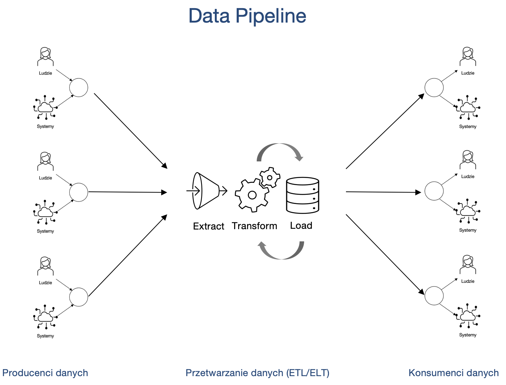
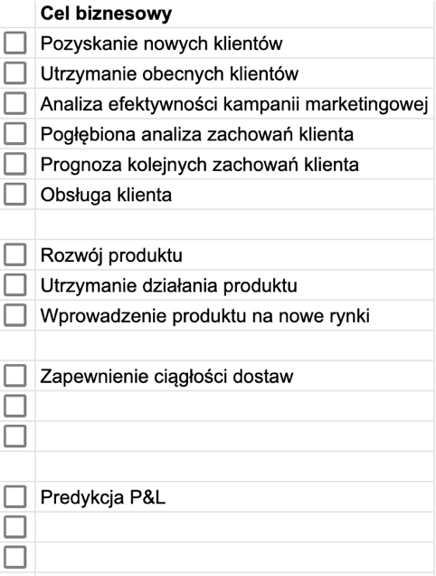

Rozdział 2 Architektury IT
2.1 Potoki danych
Na typową architekturę IT składają się producenci danych, ich konsumenci i system je przetwarzające.

Kluczowe pytania, na które warto odpowiedzieć projektując architekturę IT, to:
- Skąd pozyskamy dane?
- W jaki sposób je pozyskamy? W jaki sposób będziemy je przetwarzać? Jak je będziemy gromadzić?
- Dokąd te dane później trafią?
Najważniejsze powody, dla których warto projektować architektury IT, to:
- Rozwiązanie klasycznych problemów z danymi, takich jak:
- zmieniające się schematy baz i scenariusze użycia
- rosnąca ilość danych
- błędy w danych
- duplikacja danych
- wycieki danych
- opóźnienia (latencja)
- awarie w procesach
- konieczność manualnego zarządzania procesami IT.
- Integracja silosów informacyjnych często obecnych w firmach (osobne systemy wspomagające komunikację, zarządzanie różnymi obszarami działania, etc.)
2.4 Konsumenci danych
Analizę potrzeb, która będzie podstawą dla projektu architektury systemu IT/uczenia maszynowego, warto rozpocząć od zbadania potrzeb użytkowników końcowych (konsumentów danych), podstawowych celów biznesowych i typowych scenariuszy użycia.
Kluczowe pytania, które warto zadać na tym etapie, to:
W jaki sposób konsument danych chce z nich korzystać? Do raportowania, tworzenia wizualizacji, podejmowania decyzji, a może do budowania modeli Machine Learning (ML)?
Jakie narzędzia są aktualnie używane przez użytkowników? Microsoft Excel, Tableau, Microsoft Power BI lub Google Data Studio?
Czy istnieją jakieś standardy w ramach danej grupy użytkowników? Dział prawny może potrzebować danych w innej postaci niż księgowość czy finanse.
Możliwe cele biznesowe to:

Najbardziej typowe scenariusze użycia: